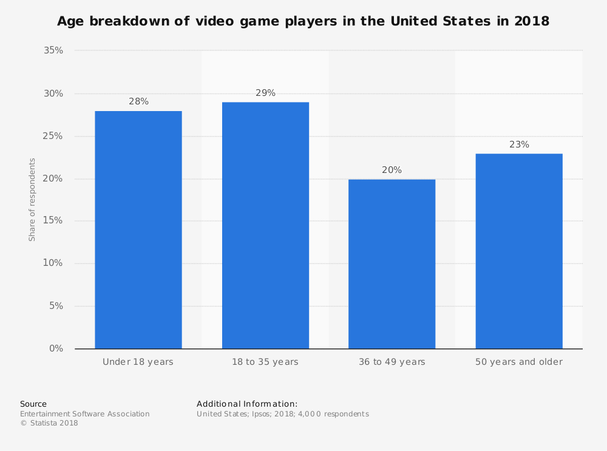

Gamifying Philosophy
About
Games are a popular pastime for many people. They have existed in every society and culture. In modern times, we have seen a large increase in the popularity of video games. While games have always been associated with children, the largest consumers of video games are teens and adults. Even though games have intrinsic value as enjoyable pastimes, there is potential to harness gaming platforms and concepts to provide more instrumental value. This is called the process of gamification. One area that many are interested in gamifying is education. It is challenging to keep young adults motivated to learn at schools. By infusing gaming concepts into educational curriculums, educators hope to increase student interest and academic performance.
The penetration rate of gamers in the united states increased by 6% between 2012 and 2016.

The average man spends about 30 minutes every day playing computer games and the average woman spends about 20 minutes.
What is a Game?
A game is a form of structured play where a player accepts rules that limit their actions in some form. By accepting to play within a set of rules and boundaries, artificial challenges can be constructed for the player to attempt to overcome. Some games involve competition and/or cooperation between multiple players, others are solo activities. Games are enjoyable when the player enters what is called the “flow state”. The flow state occurs when the player is given challenges that are neither too easy nor too hard. When in this state, the player is regularly being rewarded for the time and effort put into the activity. If the challenges are too easy for the player’s skill level, then achieving the game objectives will mean little and the player will get bored fast. On the other end of the spectrum, if the player isn’t making enough progress while spending a lot of time and energy playing the game, they will become frustrated and stop playing.
What is Gamification?
How can game design concepts be applied to education? One concept that would be especially useful to apply as an educator would be the concept of flow. How can classwork and homework be structured so that students can achieve a flow state? Similar to game play, if class is too easy, students will get bored and lose interest. However, if a class too difficult, students will get frustrated by lack of achievement and potential drop out of the class. A challenge for educators (especially those teaching in middle and high schools) is balancing flow with required objectives. Since the educators don’t necessarily choose the objectives, it is difficult to create a flow that works with their curriculum.
Another game concept that can be applied is compelling premise and storyline. As a student, I enjoy classes that integrated “whys” of what we were learning with “hows”. However, in many classes, the “why”s are not always clear. One way this can be enhanced is if instructors apply the concept of compelling premise/storyline to make the material more relatable. Some instructors do this by applying material to real-world examples. A teacher could take this a step further and create a classroom “storyline” like in an RPG game that relates to the “whys” of learning material.
Finally, the concept of reward and achievements can be integrated into education. One could argue that this is already done through tests and grades. However, these types of measurements are not necessarily rewarding (for example, a low grade on a test). One way to integrate this would be through a system of badges and levels. This type of reward could exist independently of class assessments. For example, in a math class, if a student completed a series of challenges relating to a certain concept (like integration by parts), they would get a completion badge.
One concern relating to gamifying education is the loss of intrinsic motivation. However, this is not a new issue. Given that education is mandatory through middle school and is heavily based on external motivation for many highschool and college students (those who continue education because they want more job opportunities), many students are taking courses they are not intrinsically motivated to take. Therefore, gamification would not make students any less intrinsically motivated.
Outside the schooling system, it is possible to spark intrinsic motivation in learning with games. For example, a child who loves playing minecraft may become interested in architecture or a child who loves ocean exploration games may become interested in marine biology. It is possible to create games with the intention of sparking interest in certain fields among a percentage of the players.
Gamifying Philopsophy
How could we gamify a philosophy class? I propose “Dungeons and Philosophy”(DnP). This would be a version of the popular tabletop game “Dungeons and Dragons”(DnD). DnD is a roleplaying game known for its flexibility in application. There is a dungeon master who decides on the world the game will take place and decides on a series of goals and quests for the players. While DnD is most commonly associated with fantasy roleplaying, it is also played with many other settings (futuristic, historical, modern etc). Another nice trait of DnD is interactiveness. It requires that the players and dungeon master be together in person in order to play which would make it easy to integrate class discussions into gameplay.
The dungeon master of DnP would be the professor. If DnP was made for an Eastern Philosophy course, the premise could look something like this: a group of philosophers are (time)travelling across Asia to learn about the philosophies of various cultures. Along the way, they meet various figures like Siddhārtha Gautama on his quest for enlightenment and Confucius. The have discussions with these figures (roleplayed by the dungeon master) and help them with various tasks (some type of activity that teaches the students more about a certain topic in eastern philosophy). The game could also include some non philosophical elements like fighting off a group of bandits or a wild animal. The students have individual quests (journals, papers, and reading assignments) that they work on outside of the classroom that give them more ingame experience or other rewards (currency, special items etc).
DnP would be very appealing to a subset of students who love role playing games and would draw in students who would not otherwise be interested in taking a philosophy class. However, this class game idea would also make the class less appealing to students who dislike this type of game. Perhaps the class could be taught in two sections (one section taught the standard way and another taught using DnP). Another consideration would be the amount of work the professor would need to put in as a dungeon master. The professor would need to come up with the storyline and in class gameplay. However, once the DnP game is prepared, it could easily be repeated in later semesters.
Philosophizing Games
How can we philosophize a game and teach concepts outside of a classroom setting? One idea would be to create a detective game that would also teach logic and critical thinking skills. The player is on an Island (or some town) and has a series of mysteries they need to solve. They can interact with various members of this town to gain clues for a mystery they are trying to solve. Each mystery would be a logic puzzle similar to the knights and knaves puzzles. Some mysteries would be fairly trivial, others would be very difficult, and there would be many in between. This game would expose philosophical thinking to players who are not necessarily students of philosophy. It may also encourage a subset of the players to pursue philosophy as an academic interest.
Example of a Knights and Knaves Puzzle:
Sources
- http://www.scielo.org.za/pdf/hts/v73n3/55.pdf
- https://www.youtube.com/watch?v=LhrLWjXnH24
- https://ieeexplore.ieee.org/abstract/document/6542238/
- https://journals.uair.arizona.edu/index.php/itet/article/view/18661/18410
- https://www.statista.com/topics/1680/gaming/
- https://www.jesperjuul.net/text/fearoffailing/
- http://philosophy.hku.hk/think/logic/knights.php